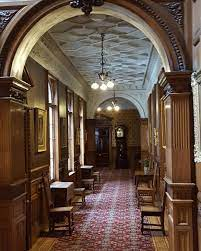

Vc ve mais 5 comodos que parecem vazios e o corredor parece um pouco sujo por conta da falta de pessoas limpando o castelo por tempos.
 CorredorPrincipal QuartoCorredorSecundario1 QuartoCorredorSecundario2 QuartoCorredorSecundario3 QuartoCorredorSecundario4 QuartoCorredorSecundario5